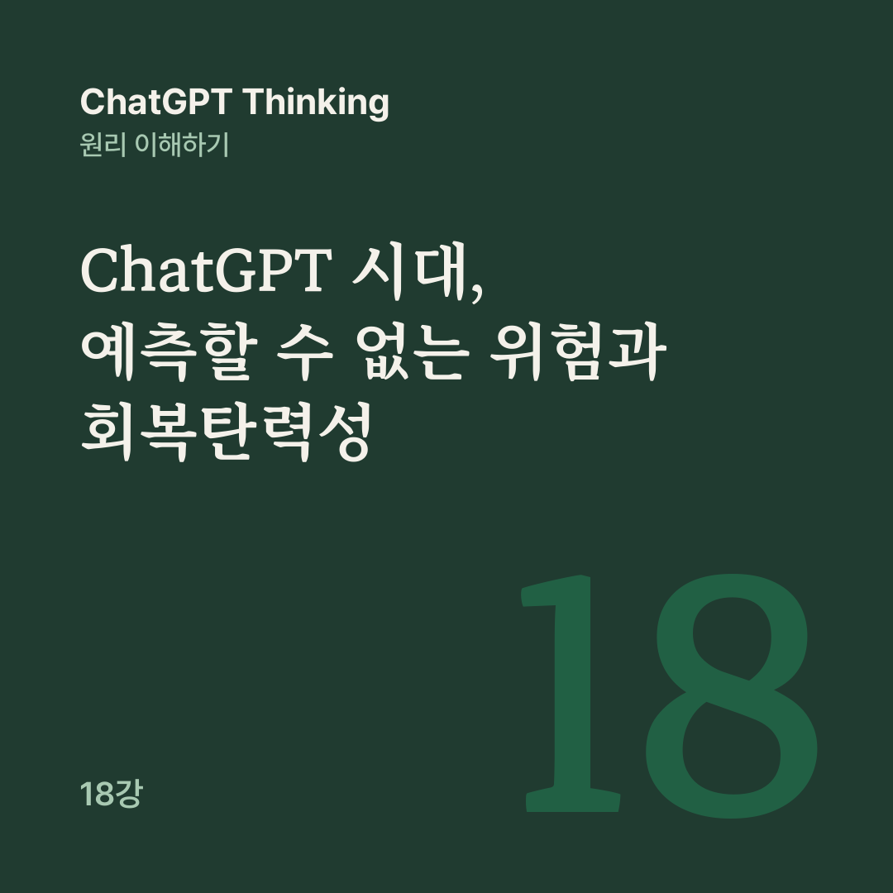

AI 원리 노트 · ChatGPT Thinking 18강
미래를 정확히 예측하는 능력만큼, 예측이 틀려도 살아남고 다시 회복할 수 있는 능력이 중요하다.
17강에서는 프리모텀, 레드팀, 스트레스 테스트로 실패를 미리 찾아내는 방법을 배웠습니다. 그런데 아무리 철저하게 위험을 찾아도 미처 상상하지 못한 일이 일어난다면 어떻게 해야 할까요?
뛰어난 인간 전문가와 AI가 협력해도 미래의 모든 변화를 예측할 수는 없습니다. 18강은 시나리오 플래닝, 블랙스완, 회복탄력성, 안전 여유라는 네 개념으로, 예측이 빗나가도 치명적인 피해를 피하고, 업무를 유지하고, 빠르게 회복할 수 있는 구조를 살펴봅니다.
어떤 쇼핑몰의 고객 문의 분석 AI가 있다고 해 봅시다. 앞선 강의에서 함께 설계한 시스템이고, 여기 나오는 숫자와 사고 상황은 모두 교육을 위한 가상 사례입니다. 지금은 시간당 고객 문의가 80건 들어오고, AI는 최대 120건을 처리할 수 있습니다. 운영 담당자는 이렇게 생각합니다.
앞으로도 이 정도 문의가 들어오겠지. 지금 시스템이면 충분해.
하지만 미래가 반드시 현재의 연장선으로 흘러가지는 않습니다. 대규모 할인 행사로 문의가 늘 수도 있고, AI가 쓰는 외부 서비스가 장애를 일으킬 수도 있습니다. 두 일이 동시에 일어날 가능성도 있습니다.
시나리오 플래닝은 서로 다른 조건에서 가능한 미래를 여러 개 구성하고, 지금 세우는 계획이 각각의 상황에서 어떻게 작동할지 검토하는 방법입니다.
Shell은 1970년대부터 이 기법을 활용해 왔고, 시나리오를 예언이나 확정적 전망과 구분해 여러 가능한 변화를 탐색하는 수단으로 설명합니다.
문의량이 평소 수준일지 급증할지, 외부 AI 서비스가 정상 작동할지 중단될지라는 두 불확실성을 조합하면 네 가지 미래가 나옵니다.
평소 문의에 서비스도 정상인 일상적 운영, 대량 문의에 서비스는 정상이지만 처리량이 부족할 수 있는 상황, 문의는 평소 수준이지만 서비스 장애로 대체 처리가 필요한 상황, 그리고 대량 문의와 서비스 장애가 겹치는 가장 어려운 복합 상황입니다.
영국 정부의 미래전략 도구도 중요한 불확실성 두 가지를 축으로 네 개의 가능한 시나리오를 만드는 방법을 소개합니다.
이 네 가지는 실제 미래의 확률이나 중요도 순위를 나타내지 않고, 넷 중 하나가 반드시 일어난다는 뜻도 아닙니다. 목적은 서로 다른 미래에서도 살아남을 수 있는 계획을 찾는 데 있습니다. 그래서 질문도 ‘어떤 미래가 가장 그럴듯한가?’에서 이렇게 바뀝니다.
우리가 선택한 계획은 어떤 미래에서 실패할까?
그런데 이 네 가지 미래 외에도 우리가 미처 생각하지 못한 변화는 얼마든지 있을 수 있습니다. 블랙스완(Black Swan)은 우리말로 ‘검은 백조’입니다.
유럽에서 검은 백조가 발견되기 전에는 백조가 모두 흰색이라고 생각했던 사람들이 있었고, 검은 백조의 발견은 그 믿음을 뒤집었습니다. 이 이야기에서 발전한 블랙스완 개념은 학자이자 작가인 나심 니컬러스 탈레브의 책 『블랙 스완』을 통해 널리 알려졌습니다.
탈레브가 설명한 블랙스완은 과거 경험과 통상적인 기대만으로는 예상하기 어렵고, 일어나면 사회, 시장, 조직 또는 시스템에 중대한 변화를 일으킬 수 있으며, 일어난 뒤에는 예측 가능했던 것처럼 설명하기 쉽습니다.
사건이 지나고 나면 사람들은 ‘생각해 보면 당연한 일이었어’라고 해석할 수 있습니다.
그렇다고 모든 큰 사고가 블랙스완은 아닙니다. AI 서비스에 장애가 날 가능성은 충분히 예상할 수 있고, 17강에서 이미 그런 상황을 시험했습니다.
블랙스완인지는 누구의 지식과 관점에서 평가하는지에 따라 달라질 수도 있습니다. 어떤 회사에는 전혀 예상하지 못한 사건이 다른 회사에는 오랫동안 준비해 온 위험일 수 있기 때문입니다.
블랙스완을 미리 모두 찾아낼 수는 없습니다. 어떤 사건이 일어날지 미리 모두 열거할 수 있다면, 그것은 더 이상 완전히 예상 밖의 사건이라고 보기 어렵습니다.
미처 파악하지 못한 외부 시스템 의존성처럼 모른다는 사실조차 몰랐던 위험도 단순한 위험 목록만으로는 발견하기 어려울 수 있습니다.
그래서 블랙스완에 대비하려면 특정 사건을 모두 맞히려 하기보다, 예상하지 못한 큰 충격에도 치명적으로 무너지지 않는 구조를 만들어야 합니다.
우리는 흔히 좋은 시스템을 절대로 고장 나지 않는 시스템으로 상상합니다. 하지만 실제로는 어떤 시스템도 모든 장애를 완벽하게 막을 수 없습니다. 그래서 중요한 것이 충격을 받았을 때의 행동입니다.
NIST는 회복탄력성(Resilience)을 변화에 대비하고 적응하며, 충격을 견디고, 빠르게 복구할 수 있는 능력으로 설명합니다. 두 시스템이 모두 충격을 받아도, 회복탄력성을 갖춘 쪽은 일부 기능이 제한된 채로 필수 업무를 유지하고 더 빨리 회복합니다.
회복탄력성은 네 가지 능력으로 이루어집니다. 견디기는 일부 도구에 장애가 생겨도 중요한 자료와 업무를 보호하는 능력이고, 축소 운영은 모든 기능을 유지할 수 없을 때 필수 기능부터 지키는 능력입니다.
복구는 정상 업무로 돌아갈 절차와 담당자를 미리 정해 두는 일이고, 학습과 적응은 실패에서 얻은 정보로 다음 충격에 더 잘 대응하도록 개선하는 일입니다.
고객 문의 AI라면, 외부 AI 서비스가 중단되더라도 고객 문의를 안전하게 접수하고 긴급 문의를 사람에게 전달하는 기능을 유지하는 것이 축소 운영의 한 예입니다.
백업이 있다는 사실과 실제로 복구할 수 있다는 사실을 혼동하고 있지는 않은가?
복구 능력은 백업 파일을 가지고 있다는 뜻만이 아닙니다. 백업을 실제로 복원해 보고, 어떤 정보를 복구했으며 무엇이 누락되었는지 검증할 수 있어야 합니다.
NIST의 AI 위험 관리 지침도 시스템이 예상하지 못한 변화를 견디고, 필요한 경우 안전하게 성능을 축소하며, 정상 기능으로 복구하는 능력을 평가하도록 안내합니다.
어떤 사람이 매달 300만 원을 벌고 정확히 300만 원을 모두 쓴다고 해 봅시다. 평소에는 문제가 없어 보이지만, 갑자기 병원비나 수리비가 생기면 남겨 둔 돈이 없어 작은 충격에도 생활이 어려워질 수 있습니다.
AI 시스템도 현재 업무를 간신히 처리할 만큼만 자원을 확보하면 예상하지 못한 상황에 대응하기 어렵습니다. 안전 여유(Margin of Safety)는 예측이 틀렸을 때 쓸 자원과 선택권을 남겨 두는 일입니다.
고객 문의 AI는 시간당 최대 120건을 처리할 수 있고 평소에는 80건이 들어옵니다. 남는 40건, 곧 전체 처리 용량의 약 33.3%가 여유입니다.
평소 80건만 처리한다고 최대 처리량을 80건으로 제한하기보다, 추가 용량을 남겨 두는 편이 갑작스러운 증가에 대응하기 유리할 수 있습니다.
Google의 서비스 신뢰성 연구도 예상하지 못한 수요와 장애에 대응할 수 있도록 적절한 용량과 여분의 자원을 계획하는 일의 중요성을 다룹니다.
하지만 문의가 시간당 200건으로 갑자기 늘면 40건의 여유가 있어도 처리 능력이 부족하고, 추가 용량을 유지하려면 비용이 들 수 있습니다. 따라서 안전 여유의 크기는 예상 가능한 비용, 실패 피해, 대체 수단을 함께 따져서 정해야 합니다. 실제 운영자는 이런 질문도 해야 합니다.
외부 서비스 전체가 중단되는 상황이라면 추가 용량도 무용지물이 되지 않는가?
바로 여기서 자원을 더 확보하는 방법과, 다른 방식으로 일을 계속할 수 있게 만드는 방법을 함께 고려해야 합니다.
회복탄력성에서 매우 중요한 수치가 복구 시간입니다. AI 서비스가 멈췄다고 모든 고객 문의를 기다리게 할 수는 없으니, 사람이 수작업으로 일부 문의를 처리하는 대체 절차를 마련해 둔 경우를 계산해 봅니다.
문의는 시간당 100건씩 들어오고, AI가 멈춘 동안 사람은 시간당 30건을 처리하며, AI가 복구되면 전체 처리 능력은 시간당 150건입니다. 장애는 3시간 이어졌습니다.
AI가 멈춘 동안에는 시간당 70건씩 쌓이니 3시간이면 210건이 밀립니다. 복구 후에는 시간당 150건을 처리할 수 있지만 새 문의도 계속 시간당 100건씩 들어오므로, 밀린 문의를 줄이는 데 쓸 수 있는 처리량은 시간당 50건입니다.
210건을 다 따라잡으려면 4.2시간이 더 필요하고, 장애 3시간을 합치면 정상적인 대기 상태로 돌아가기까지 7.2시간이 걸리는 셈입니다.
시스템이 다시 켜지는 것과 업무가 원래 수준으로 정상화되는 것은 다릅니다. 장애를 빨리 복구하는 일만큼, 복구할 때까지 핵심 업무를 유지하는 대체 수단도 중요합니다.
시나리오마다 완전히 다른 계획을 세울 수도 있지만, 더 좋은 출발점은 여러 미래에서 공통으로 도움이 되는 준비를 찾는 것입니다.
고객 문의 AI라면 모든 문의에 고유 ID를 붙여 중복 처리와 데이터 유실을 막고, 접수 데이터를 안전하게 보존하는 일이 그렇습니다. 긴급 문의를 수작업으로 처리하는 절차와 검증된 복구 방법을 준비하고, 처리량과 정확도를 감시하는 일도 마찬가지입니다.
이런 후회가 적은 전략(No-regret Strategy)은 어떤 미래가 올지 정확히 맞히지 못해도 도움이 될 수 있습니다. 반대로 특정 예측이 맞아야만 성공하는 계획은 불확실성이 클수록 취약할 수 있습니다.
선택의 여유를 남기는 것이 더 현명할 때가 있습니다.
불확실성이 클 때는 되돌리기 어려운 결정을 한 번에 크게 실행하기보다, 작은 시험으로 정보를 얻고 점진적으로 확대하는 접근이 도움이 될 수 있습니다. 물론 모든 결정을 늦출 수는 없으니, 지금 행동하지 않을 때의 피해도 살펴야 합니다.
다음 강의인 19강은 불확실할수록 작게 결정하고 빠르게 배우는 방법을 다룹니다.
공개 대화의 18강을 블로그용으로 다시 편집했습니다. 원문 강의가 참고한 글은 아래 여섯 편입니다.
